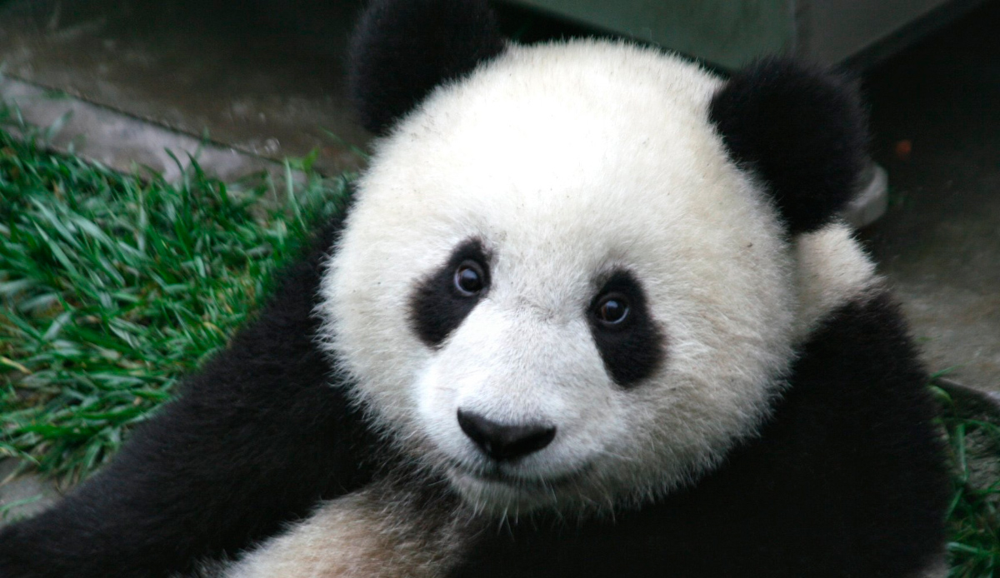
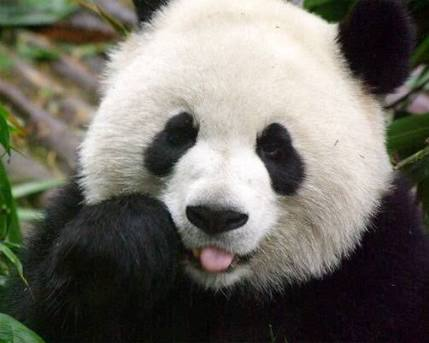

Aunque pertenece al orden de los carnívoros, el panda es un animal mayormente herbívoro, alimentándose casi exclusivamente de cerca de treinta especies de caña de bambú (el 99 % de su dieta consiste en bambú). Se sabe que también utiliza insectos y huevos como fuente de proteínas.  
Durante mucho tiempo, el panda gigante, junto al panda rojo, fue incluido en la familia de los prociónidos, la misma de los mapaches. Pruebas genéticas recientes lo colocan en la familia de los osos (Ursidae),29 siendo su pariente más cercano el oso de anteojos de América del Sur. Existen dos subespecies de panda gigante: Ailuropoda melanoleuca melanoleuca - a la que pertenece la mayor parte de la población de pandas; se encuentra en las regiones montañosas de Sichuan. Ailuropoda melanoleuca qinlingensis - vive en las montañas Qinling en Shaanxi a 1.300-3.000 m s. n. m. Se distinguen de la variedad de Sichuan por tener una coloración distinta (marrón claro y oscuro) y una cabeza más pequeña con molares más largos.